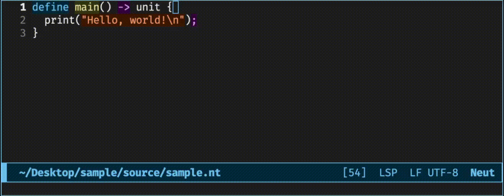
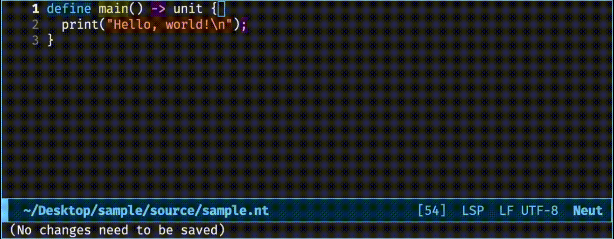
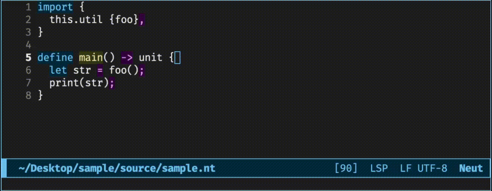
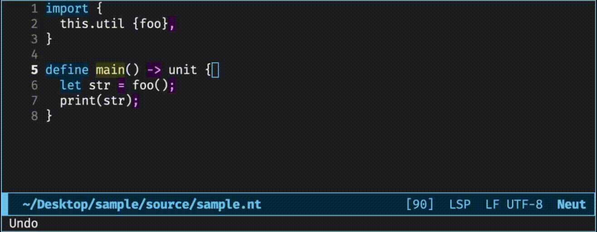
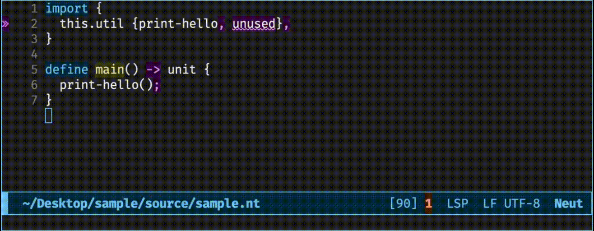
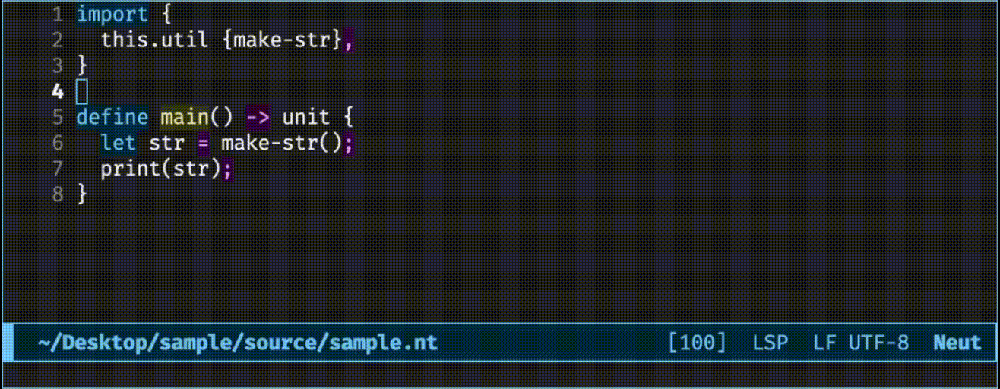
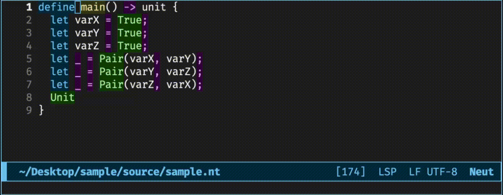

LSP Showcase
The compiler includes an LSP server. This chapter shows some of its features.
Showcase
The LSP server currently has the following features:
- Lint
- Completion (+ automatic import)
- Jump to Definition
- Find References
- Format on Save
- Remove Unused Imports
- Show the Type of a Variable
- Highlight Symbols
Lint

Completion (+ automatic import)

Jump to Definition

Find References

Format on Save
Remove Unused Imports

Show the Type of a Variable

Highlight Symbols
